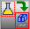
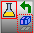

|
|
|
|
|
|
|
|
At run time, once you load a parison recipe group to the Parison Graph Toolchest Part, the parison graph is rendered and plotted. You can set up to 8 Parison Graph Toolchest Parts on a single target machine.
Parison Graph Toolchest part is supported by target machines with screens larger than 320x240 pixels. HMISTO does not support Parison Graph Toolchest part.
The Parison Graph Toolchest part has the following control buttons:
|
|
Behavior on a Web Gate Client |
Touch Enable/Disable |
Enables or disables touch on the Parison graph area. The default is set to Enabled. |
|
Master Point Selector |
Selects the number of master points from the following pre-defined values: 16, 24, 32, 40, 48, 56, or 64. The default value is 16. |
|
Send |
 |
Sends the parison graph data to the equipment. |
Snapshot |
 |
Copies the parison graph data from the equipment. To save the data, you must perform a Save operation. |
Save |
Saves the parison graph to the recipe profile. |
|
Recipe Selector |
Use the drop-down list to select a parison recipe profile. |
To edit the parison graph:
Enable touch on the graph by pressing .
Touch the graph where you want to modify. The closest master point's number and its value are displayed. For example, M5:13, where M5 represents the fifth master point and 13 is its value.
Press on the right or left arrows to increase or decrease the master point's value respectively. Once you update a master point's value, all other points on the graph will be re-calculated and the graph will be updated.
Touch the Send button to send the new parison profile to the equipment. Please note that once you send the updated graph to the equipment, all points will be updated and any previous changes will be overwritten.